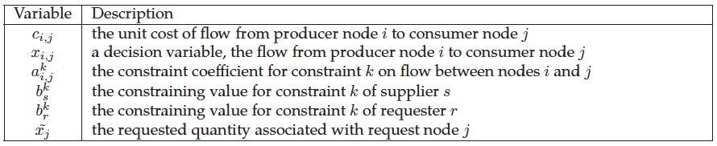
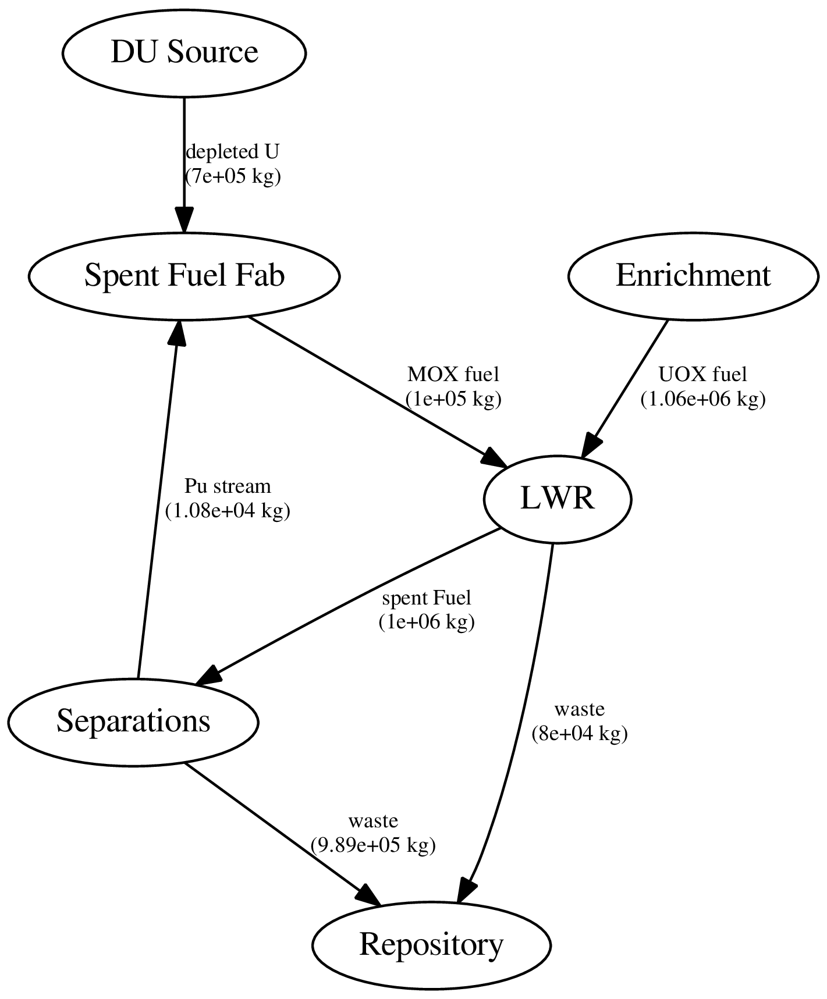
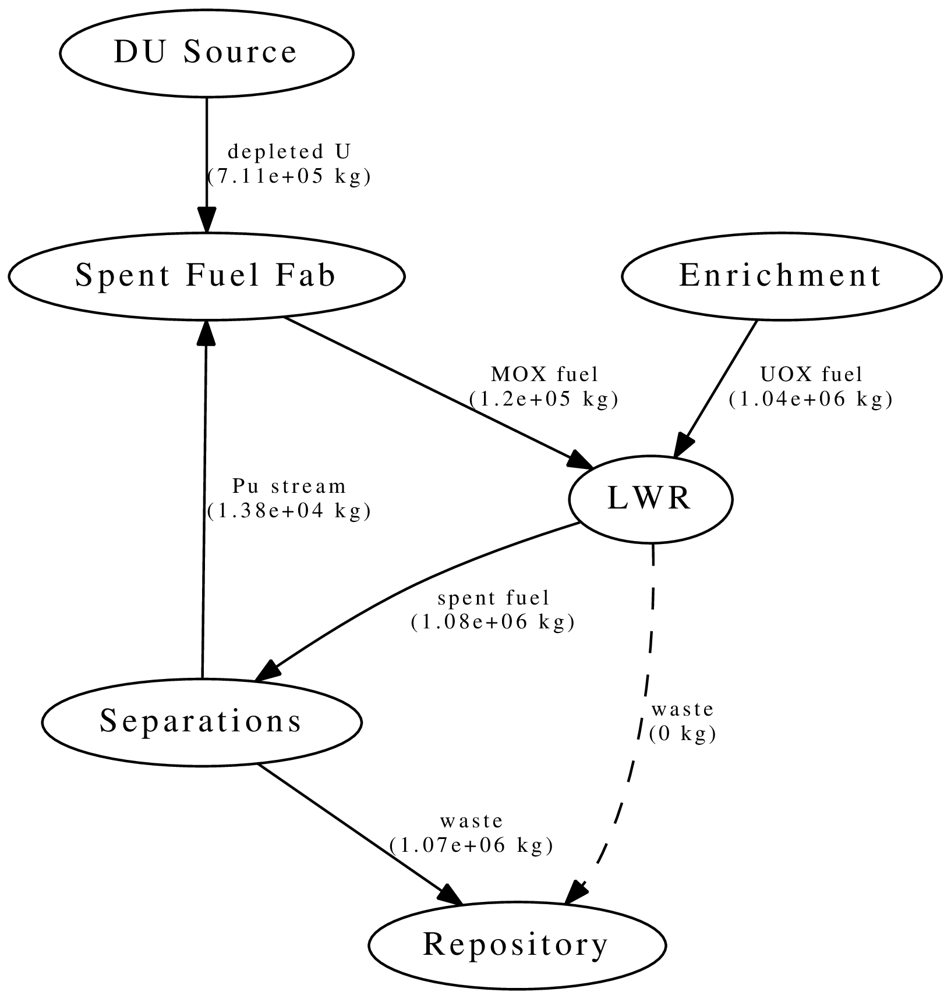
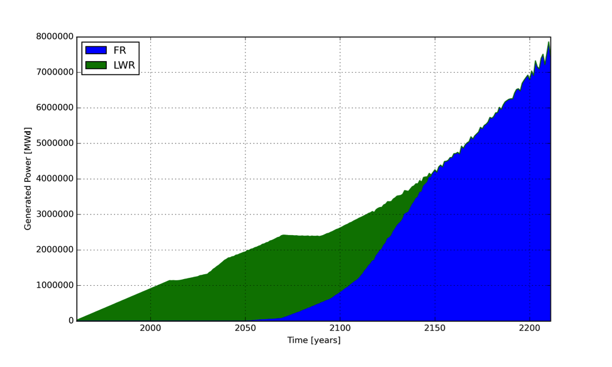

Cyclus Fundamentals
Kathryn Huff
A Nuclear Fuel Cycle Simulation Framework
The Nuclear Fuel Cycle
Hundreds of discrete facilities mine, mill, convert, fabricate, transmute, recycle, and store nuclear material.

Fuel Cycle Metrics
- Mass Flow
- inventories, decay heat, radiotoxicity,
- proliferation resistance and physical protection (PRPP) indices.
- Cost
- levelized cost of electricity,
- facility life cycle costs.
- Economics
- power production, facility deployments,
- dynamic pricing and feedback.
- Disruptions
- reliability, safety,
- system robustness.
Current Simulators
- CAFCA (MIT)
- COSI (CEA)
- DANESS (ANL)
- DESAE (Rosatom)
- Evolcode (CIEMAT)
- FAMILY (IAEA)
- GENIUSv1 (INL)
- GENIUS v2 (UW)
- NFCSim (LANL)
- NFCSS (IAEA)
- NUWASTE (NWTRB)
- ORION (NNL)
- MARKAL (BNL)
- VISION (INL)
State of the Art
Performance
- Speed interactive time scales
- Fidelity: detail commensurate with existing challenges
- Detail: discrete material and agent tracking
- Regional Modeling: enabling international socio-economics
Beyond the State of the Art
Access
- Openness: for collaboration, validation, and code sustainability.
- Usability: for a wide range of user sophistication
Extensibility
- Modularity: core infrastructure independent of proprietary or sensitive data and models
- Flexibility with a focus on robustness for myriad potential developer extensions.
Extensibility

Openness
Growing Ecosystem

...Well Beyond
Algorithmic Sophistication
- Efficient: memory-efficient isotope tracking
- Customizable: constrained fuel supply
- Dynamic: isotopic-quality-based resource routing
- Physics-based: fuel fungibility
Agent Based Systems Analysis
An agent-based simulation is made up of actors and communications between those actors.
Agent Based Systems Analysis
A facility might create material.

Agent Based Systems Analysis
It might request material.

Agent Based Systems Analysis
It might do both.

Agent Based Systems Analysis
Even simple fuel cycles have many independent agents.
Dynamic Resource Exchange
 \[N_i \subset N\]
\[N_i \subset N\]
Dynamic Resource Exchange
 \[N_j \subset N\]
\[N_j \subset N\]
Dynamic Resource Exchange
 \[N_i \cup N_j = N\]
\[N_i \cup N_j = N\]
Feasibility vs. Optimization

If a decision problem is in NP-C, then the corresponding optimization problem is NP-hard.
Multi-Commodity Transportation Formulation
Multi-Commodity Transportation Formulation
\[ \begin{align} \min_{x} z &= \sum_{i\in I}\sum_{j\in J} c_{i,j}x_{i,j} & \\ s.t & \sum_{i\in I_s}\sum_{j\in J} a_{i,j}^k x_{i,j} \le b_s^k & \forall k\in K_s, \forall s\in S\\ & \sum_{J\in J_r}\sum_{i\in I} a_{i,j}^k x_{i,j} \le b_r^k & \forall k\in K_r, \forall r\in R\\ & x_{i,j} \in [0,x_j] & \forall i\in I, \forall j\in J \end{align} \]
Dynamic Resource Exchange
Dynamic Resource Exchange
Dynamic Resource Exchange
mox
- waste
+ spent_fuel
mox_fresh_fuel
mox_spent_fuel
Dynamic Resource Exchange

Transition Analysis
- LWR to SFR
- $T_0 = 2015$
- $T_f <= 2215$
- $C_0 = 100$ GWe LWR
- Annual nuclear energy demand growth: 1%
- Legacy LWRs have either 60-year lifetimes or 80-year lifetimes.
- Spent LWR fuel reprocessed to fabricate FR fuel
- Spent FR fuel reprocessed to fabricate FR fuel
Transition Analysis
Power generated by reactor type.
Transition Analysis

Capacity deployed each year, by reactor type.
Resources
Ok, I'm convinced. So how can one learn this stuff?Online Resources
- Software Carpentry
- Version Control: Github, Pro Git book
- Testing: nose, goolgetest
- Documentation: Sphinx, Doxygen
- Effective Computation in Physics
Links
Acknowledgements
- Paul Wilson
- Anthony Scopatz
- Matthew Gidden
- Robert Carlsen
- Robert Flanagan
- Denia Djokic
- and many more...
THE END
Katy Huff
katyhuff.github.io/2016-11-14-cyclus
Cyclus Fundamentals by Kathryn Huff is licensed under a Creative Commons Attribution 4.0 International License.
Based on a work at http://katyhuff.github.io/2016-11-14-cyclus.